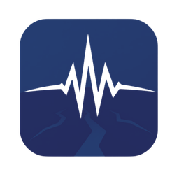

SISMIA SVCombinamos el catálogo global de USGS con los reportes locales del MARN para no perderte los sismos que sí se sienten pero que a veces nunca llegan a las noticias.
Último sismo registrado
Actividad reciente
Cargando sismos…
Tendencia de actividad (14 días)
Calculando tendencia…
Clima en tiempo real
Mapa vía Windy.com. Cambiá la capa (lluvia, viento, temperatura) desde el menú del mapa.